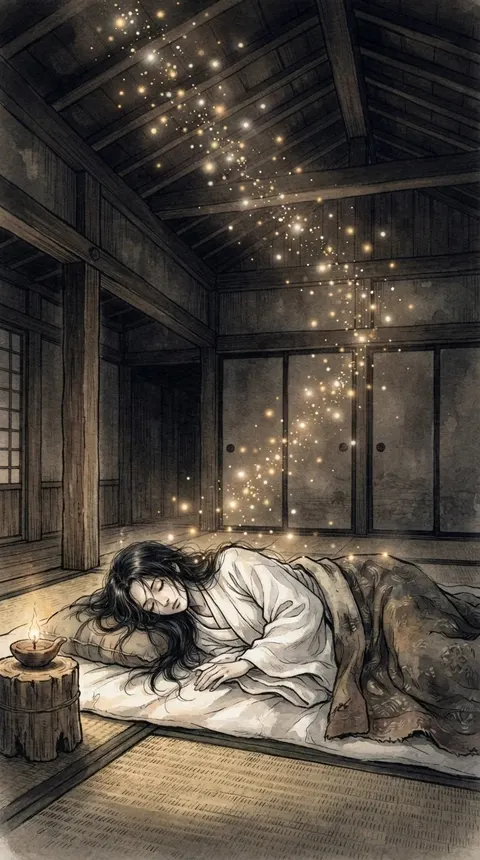

病床に生まれた神々古事記の神々 其の二十八
火の神を生んで体を焼かれ、病に伏した伊耶那美。その体から、次々と神が生まれました。
まず知りたい疑問：なぜ吐いたものやふんから神が生まれるの？
古事記と、名前の意味
- 吐いたものから、金山毘古神（かなやまびこのかみ）と金山毘売神（かなやまびめのかみ）。鉱山の神です。吐いたものが、溶けた鉱石に似ているからともいわれます
- ふんから、波邇夜須毘古神（はにやすびこのかみ）と波邇夜須毘売神（はにやすびめのかみ）。「ハニ」は土のこと。ねばる土で土器をつくる神とする説もあります
- 尿から、水の神・弥都波能売神（みつはのめのかみ）と、和久産巣日神（わくむすひのかみ）。「ワク」は若いという意味です
- 和久産巣日神の子が、豊宇気毘売神（とようけびめのかみ）。「ウケ」は食べ物のことです
- 土と水は、穀物が実るもと。本居宣長は、この神々をそう読みました
- 吐いたものなどから神が生まれるわけには、火山の噴火、焼畑、火を鎮める祭りなど、いくつもの説があります
- このあと、伊耶那美はついにこの世を去ります
- 岐阜県の南宮大社は、金山彦命を祀る、鉱山・金属の神の宮として知られています
よくある疑問
なぜ吐いたものやふんから神が生まれるの？
古事記は理由を書いていません。火山の噴火、焼畑などの農耕、五行思想、火を鎮める祭り、香具山の祭祀を映しているという説があります。
豊宇気毘売神は、伊勢神宮の外宮の神さま？
天孫降臨の場面に出てくる登由宇気神（外宮の祭神）と同じ神とみるかどうかは、説が分かれています。
同じ場面の神さま（神生み）

イメージ画
1分で見る
1分の動画は
12月6日 20時に公開します
12月6日 20時に公開します
出典と画像
参考：國學院大學「古事記ビューアー」「神名データベース」・岐阜県観光連盟「岐阜の旅ガイド」
写真：南宮大社 楼門 撮影 Alpsdake／Wikimedia Commons／CC BY-SA 4.0（https://creativecommons.org/licenses/by-sa/4.0/ ）。9:16に切り出して使用
写真以外の画像はイメージです。
動画のナレーション：VOICEVOX:青山龍星